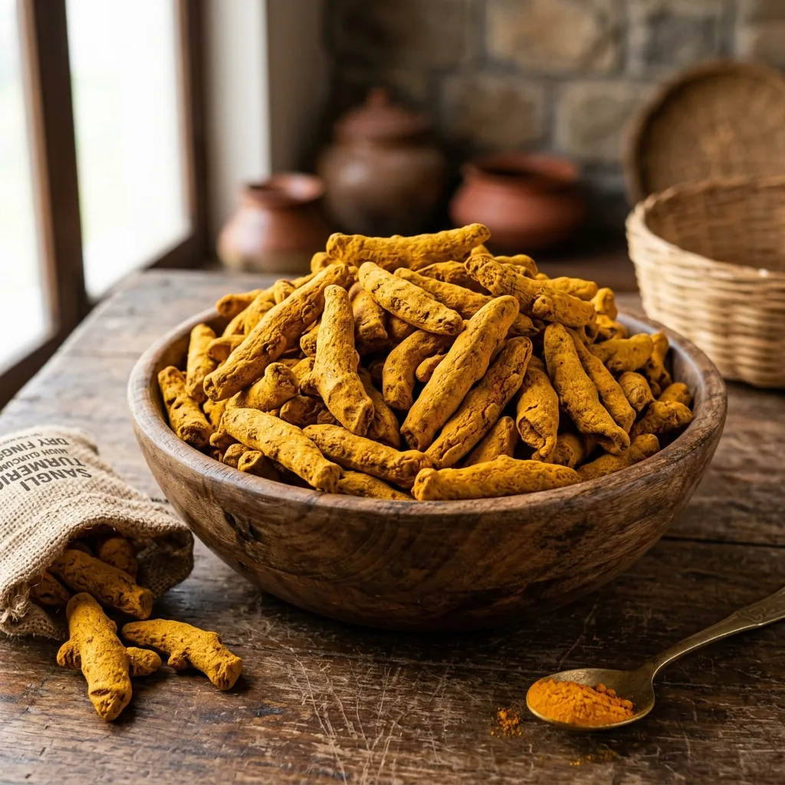

Báo cáo thị trường
Ngày 01 tháng 5 năm 2026
đọc 8 phút
4.200 lượt xem

Khi nhu cầu của châu Âu đối với nghệ Ấn Độ giàu chất curcumin tăng cao, các nhà nhập khẩu đang phải đối mặt với chuỗi cung ứng bị thắt chặt. Đây là triển vọng năm 2026 của chúng tôi đối với việc xuất khẩu Bột nghệ và Bột nghệ.
Động lực thị trường hiện tại
Nizamabad và Erode mandis đã chứng kiến lượng khách đến sớm giảm 15% trong mùa giải này. Sự khan hiếm nguồn cung này, cùng với nhu cầu dược phẩm ngày càng tăng ở EU đối với nghệ có hàm lượng curcumin cao (3-5%), đã đẩy giá FOB tăng lên.
Dự báo giá
Chúng tôi dự đoán giá sẽ duy trì ổn định cho đến hết Quý 3. Người mua nên chốt hợp đồng hàng năm ngay bây giờ thay vì mua ngay.
Chiến lược dành cho người mua của JFT Agro
Chúng tôi đã đảm bảo được số lượng lớn nghệ Salem được đánh bóng hai lần. Hãy liên hệ với bộ phận giao dịch của chúng tôi ngay hôm nay để đảm bảo khối lượng của bạn ở mức giá hiện tại.
Sự thống trị về sản xuất của Ấn Độ và triển vọng cây trồng năm 2026
Ấn Độ sản xuất khoảng 78% lượng nghệ của thế giới - khoảng 1,1 triệu tấn mỗi năm. Các trạng thái sản xuất chính:
| tiểu bang | Các quận chính | Chia sẻ | lớp |
|---|
| Telangana | Nizamabad, Karimnagar | 35% | Củ Nizamabad - chất curcumin cao |
| Andhra Pradesh | Vùng xói mòn mở rộng | 15% | Lớp hỗn hợp |
| Tamil Nadu | Xói mòn, Salem, Dharmapuri | 30% | Ngón tay Salem/Erode — cao cấp |
| Maharashtra | Sangli, Kolhapur | 12% | Rajapuri - chất curcumin trung bình |
| Khác | Odisha, Karnataka | 8% | khác nhau |
Vụ nghệ 2025–26 (thu hoạch từ tháng 1 đến tháng 3 năm 2026) được hưởng lợi từ lượng mưa gió mùa đông bắc tốt ở Telangana và Tamil Nadu. Sản lượng ước tính đạt 1,15 triệu tấn - cao hơn mức trung bình một chút. Giá đã giảm từ mức đỉnh năm 2024 (22.000 Rs/tạ) xuống 14.000–16.000 Rs/tạ vào năm 2026, chuyển sang giá FOB là 1.400–1.650 USD/tấn đối với loại Salem Finger.
Tiêu chuẩn hàm lượng Curcumin theo thị trường
Hàm lượng Curcumin (sắc tố màu vàng hoạt động) là yếu tố quyết định chất lượng chính. Thông số kỹ thuật khác nhau tùy theo thị trường:
- Dược phẩm/dinh dưỡng: Tối thiểu 3,0–5,0% chất curcuminoid bằng HPLC
- Ngành màu thực phẩm: Tối thiểu 2,5–3,0% chất curcuminoid
- Ẩm thực/bán lẻ: Tối thiểu 2,0% có thể chấp nhận được; thị trường cao cấp thích 3,0%+
- Tiêu chuẩn FSSAI (Ấn Độ): Dầu dễ bay hơi tối thiểu 2,0%
Cảnh báo ngoại tình: Việc pha trộn nghệ với Chì Chromate (Metanil màu vàng hoặc sơn chì) để tăng màu là một vấn đề an toàn thực phẩm đã được ghi nhận. Luôn yêu cầu xét nghiệm cụ thể đối với chì (Pb <2,5 ppm, giới hạn của EU <0,5 ppm) và thuốc nhuộm Sudan. Cả hai đều được các phòng thí nghiệm của NABL thử nghiệm như một phần của hội đồng thử nghiệm xuất khẩu gia vị tiêu chuẩn.
JA
Bàn giao dịch nông sản JFT
Nhóm xuất khẩu của JFT Agro đã vận chuyển Gạo và Gia vị Basmati đến hơn 25 quốc gia kể từ năm 2010. Những hiểu biết sâu sắc về thương mại của chúng tôi dựa trên dữ liệu lô hàng thực tế, phản hồi của người mua và thông tin thị trường được thu thập trên khắp ba châu lục.
Sẵn sàng để đặt hàng của bạn?
Nhận Hóa đơn Proforma cho 1121 hoặc 1509 Basmati, CIF cảng của bạn, thường trong vòng một ngày làm việc.
Yêu cầu báo giá xuất khẩu
Thông tin khác từ JFT Agro Insights